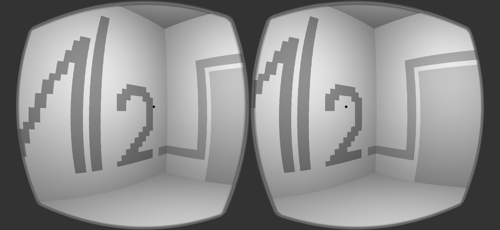

<НОВОЕ СООБЩЕНИЕ>
[От кого: "Край 2.0"]
[Дата: 30.08.20XX]
Здравствуйте!
Наш Интеллект рассмотрел Вашу заявку и классифицировал её как "хорошая". Это означает, что Вы подходите для работы на позиции "Поставщик данных для ИИ". Для того, чтобы начать работать, приготовьте шлем виртуальной реальности, установите на него приложение из этого сообщения и запустите его.
Ваш логин: V-32767.
[Приложение: edgedp.apk (1.09 Gb)]
<Установка Edge Data Provider App 2.13...>
[ЗАПУСК]
[ВХОД: V-32767]
Добро пожаловать в Край, V-32767. Мы благодарим Вас за то, что Вы готовы сотрудничать с нами. Ваше желание войти в историю Края, как и искуственного интеллекта в целом, очень важно для нас, и мы с гордостью готовы представить задачи, которые Вам предстоит решить. Но для начала познакомим Вас с Краем.
Край — это сгенерированная Интеллектом в реальном времени симуляция мира, очень схожего с реальным. Окружение будет выглядить знакомо, поэтому привыкнуть к симуляции Края не составит труда. Ваш шлем виртуальной реальности — это проводник в Край, его будет достаточно для комфортной работы.
Ваша работа заключается в решении задач, связанных с взаимодействием с окружающим миром, которые специальным образом генерирует Интеллект Края.
Нам важно знать, какими методами и какой логикой пользуется человек во время исследования и взаимодействия с окружающей средой. Мы будем собирать важные данные о проведенных опытах и вознаграждать за прохождение заданий.
Давайте же приступим к работе, V-32767!

Ожидайте в 2020. Для Cardboard и Daydream VR.